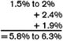
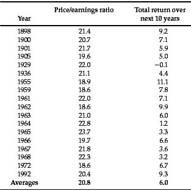

You’ve got to be careful if you don’t know where you’re going, ’cause you might not get there.
—Yogi Berra
In this chapter, Graham shows how prophetic he can be. He looks two years ahead, foreseeing the “catastrophic” bear market of 1973–1974, in which U.S. stocks lost 37% of their value. 1 He also looks more than two decades into the future, eviscerating the logic of market gurus and best-selling books that were not even on the horizon in his lifetime.
The heart of Graham’s argument is that the intelligent investor must never forecast the future exclusively by extrapolating the past. Unfortunately, that’s exactly the mistake that one pundit after another made in the 1990s. A stream of bullish books followed Wharton finance professor Jeremy Siegel’s Stocks for the Long Run (1994)—culminating, in a wild crescendo, with James Glassman and Kevin Hassett’s Dow 36,000, David Elias’ Dow 40,000, and Charles Kadlec’s Dow 100,000 (all published in 1999). Forecasters argued that stocks had returned an annual average of 7% after inflation ever since 1802. Therefore, they concluded, that’s what investors should expect in the future.
Some bulls went further. Since stocks had “always” beaten bonds over any period of at least 30 years, stocks must be less risky than bonds or even cash in the bank. And if you can eliminate all the risk of owning stocks simply by hanging on to them long enough, then why quibble over how much you pay for them in the first place? (To find out why, see the sidebar on p. 82.)
In 1999 and early 2000, bull-market baloney was everywhere:
But the answer is yes. It always has been. It always will be.
And when Graham asked, “Can such heedlessness go unpunished?” he knew that the eternal answer to that question is no. Like an enraged Greek god, the stock market crushed everyone who had come to believe that the high returns of the late 1990s were some kind of divine right. Just look at how those forecasts by Landis, Froelich, and Applegate held up:
There was a fatal flaw in the argument that stocks have “always” beaten bonds in the long run: Reliable figures before 1871 do not exist. The indexes used to represent the U.S. stock market’s earliest returns contain as few as seven (yes, 7!) stocks. 1 By 1800, however, there were some 300 companies in America (many in the Jeffersonian equivalents of the Internet: wooden turnpikes and canals). Most went bankrupt, and their investors lost their knickers.
But the stock indexes ignore all the companies that went bust in those early years, a problem technically known as “survivorship bias.” Thus these indexes wildly overstate the results earned by real-life investors—who lacked the 20/20 hindsight necessary to know exactly which seven stocks to buy. A lonely handful of companies, including Bank of New York and J. P. Morgan Chase, have prospered continuously since the 1790s. But for every such miraculous survivor, there were thousands of financial disasters like the Dismal Swamp Canal Co., the Pennsylvania Cultivation of Vines Co., and the Snickers’s Gap Turn-pike Co.—all omitted from the “historical” stock indexes.
Jeremy Siegel’s data show that, after inflation, from 1802 through 1870 stocks gained 7.0% per year, bonds 4.8%, and cash 5.1%. But Elroy Dimson and his colleagues at London Business School estimate that the pre-1871 stock returns are overstated by at least two percentage points per year. 2 In the real world, then, stocks did no better than cash and bonds—and perhaps a bit worse. Anyone who claims that the long-term record “proves” that stocks are guaranteed to outper-forms bonds or cash is an ignoramus.
As the enduring antidote to this kind of bull-market baloney, Graham urges the intelligent investor to ask some simple, skeptical questions. Why should the future returns of stocks always be the same as their past returns? When every investor comes to believe that stocks are guaranteed to make money in the long run, won’t the market end up being wildly overpriced? And once that happens, how can future returns possibly be high?
Graham’s answers, as always, are rooted in logic and common sense. The value of any investment is, and always must be, a function of the price you pay for it. By the late 1990s, inflation was withering away, corporate profits appeared to be booming, and most of the world was at peace. But that did not mean—nor could it ever mean—that stocks were worth buying at any price. Since the profits that companies can earn are finite, the price that investors should be willing to pay for stocks must also be finite.
Think of it this way: Michael Jordan may well have been the greatest basketball player of all time, and he pulled fans into Chicago Stadium like a giant electromagnet. The Chicago Bulls got a bargain by paying Jordan up to $34 million a year to bounce a big leather ball around a wooden floor. But that does not mean the Bulls would have been justified paying him $340 million, or $3.4 billion, or $34 billion, per season.
Focusing on the market’s recent returns when they have been rosy, warns Graham, will lead to “a quite illogical and dangerous conclusion that equally marvelous results could be expected for common stocks in the future.” From 1995 through 1999, as the market rose by at least 20% each year—a surge unprecedented in American history—stock buyers became ever more optimistic:
Even though investors all know they’re supposed to buy low and sell high, in practice they often end up getting it backwards. Graham’s warning in this chapter is simple: “By the rule of opposites,” the more enthusiastic investors become about the stock market in the long run, the more certain they are to be proved wrong in the short run. On March 24, 2000, the total value of the U.S. stock market peaked at $14.75 trillion. By October 9, 2002, just 30 months later, the total U.S. stock market was worth $7.34 trillion, or 50.2% less—a loss of $7.41 trillion. Meanwhile, many market pundits turned sourly bearish, predicting flat or even negative market returns for years—even decades—to come.
At this point, Graham would ask one simple question: Considering how calamitously wrong the “experts” were the last time they agreed on something, why on earth should the intelligent investor believe them now?
Instead, let’s tune out the noise and think about future returns as Graham might. The stock market’s performance depends on three factors:
In the long run, the yearly growth in corporate earnings per share has averaged 1.5% to 2% (not counting inflation). 3 As of early 2003, inflation was running around 2.4% annually; the dividend yield on stocks was 1.9%. So,

In the long run, that means you can reasonably expect stocks to average roughly a 6% return (or 4% after inflation). If the investing public gets greedy again and sends stocks back into orbit, then that speculative fever will temporarily drive returns higher. If, instead, investors are full of fear, as they were in the 1930s and 1970s, the returns on stocks will go temporarily lower. (That’s where we are in 2003.)
Robert Shiller, a finance professor at Yale University, says Graham inspired his valuation approach: Shiller compares the current price of the Standard & Poor’s 500-stock index against average corporate profits over the past 10 years (after inflation). By scanning the historical record, Shiller has shown that when his ratio goes well above 20, the market usually delivers poor returns afterward; when it drops well below 10, stocks typically produce handsome gains down the road. In early 2003, by Shiller’s math, stocks were priced at about 22.8 times the average inflation-adjusted earnings of the past decade—still in the danger zone, but way down from their demented level of 44.2 times earnings in December 1999.
How has the market done in the past when it was priced around today’s levels? Figure 3-1 shows the previous periods when stocks were at similar highs, and how they fared over the 10-year stretches that followed:
FIGURE 3-1

Sources: http://aida.econ.yale.edu/˜shiller/data/ie_data.htm; Jack Wilson and Charles Jones, “An Analysis of the S & P 500 Index and Cowles’ Extensions: Price Index and Stock Returns, 1870–1999,” The Journal of Business, vol. 75, no. 3, July, 2002, pp. 527–529; Ibbotson Associates.
Notes: Price/earnings ratio is Shiller calculation (10-year average real earnings of S & P 500-stock index divided by December 31 index value). Total return is nominal annual average.
So, from valuation levels similar to those of early 2003, the stock market has sometimes done very well in the ensuing 10 years, sometimes poorly, and muddled along the rest of the time. I think Graham, ever the conservative, would split the difference between the lowest and highest past returns and project that over the next decade stocks will earn roughly 6% annually, or 4% after inflation. (Interestingly, that projection matches the estimate we got earlier when we added together real growth, inflationary growth, and speculative growth.) Compared to the 1990s, 6% is chicken feed. But it’s a whisker better than the gains that bonds are likely to produce—and reason enough for most investors to hang on to stocks as part of a diversified portfolio.
But there is a second lesson in Graham’s approach. The only thing you can be confident of while forecasting future stock returns is that you will probably turn out to be wrong. The only indisputable truth that the past teaches us is that the future will always surprise us—always! And the corollary to that law of financial history is that the markets will most brutally surprise the very people who are most certain that their views about the future are right. Staying humble about your forecasting powers, as Graham did, will keep you from risking too much on a view of the future that may well turn out to be wrong.
So, by all means, you should lower your expectations—but take care not to depress your spirit. For the intelligent investor, hope always springs eternal, because it should. In the financial markets, the worse the future looks, the better it usually turns out to be. A cynic once told G. K. Chesterton, the British novelist and essayist, “Blessed is he who expecteth nothing, for he shall not be disappointed.” Chesterton’s rejoinder? “Blessed is he who expecteth nothing, for he shall enjoy everything.”